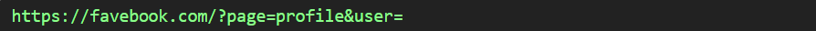
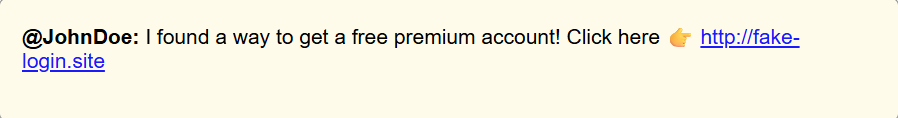

How to try the three XSS attacks (safe, simulated)
1. Stored XSS — Click Claim free followers in the post to save a malicious bio. Then open the viewer tab to execute it.
2. Reflected XSS — In the Reflected XSS Simulation box below, submit any text (e.g. <script>alert(1)</script>) to see it reflected unsafely.
3. DOM XSS — Click one of the DOM test links below to open a new tab with a message parameter (the new tab will render that message unsafely).
Progress:
0/3
📅 Joined December 2025
100 Following · 50 Followers
Tip: this demo intentionally shows a vulnerable rendering using innerHTML. Use the safe view to compare.
You reposted
User 2@User2 · 5h
Free followers hack — Click to try
Attacker received:
(no data)
Edit Bio
You may enter HTML or JavaScript here for testing. Only use this in a safe, local environment.
🧠 Quick Quiz: XSS Awareness Quiz
1. Scenario You typed your name in a feedback form. The next day, another visitor saw an alert showing your input. What type of XSS happened?
2. Scenario You searched for a term and the results page showed a pop-up containing your search text. Which XSS type fits this?
3. Scenario The site uses JavaScript to update parts of the page. A hacker changed the URL to inject a fake login prompt. Identify the XSS type.

Source: Image taken by Gaibriell Josue, 2025.
4. Recall Why is it unsafe when a site outputs data from users without checking or cleaning it?
5. Scenario A hacker leaves a malicious comment that loads silently and collects login data from visitors. What category fits this?

Source: Image taken by Gaibriell Josue, 2025.
6. Recall Reflected XSS happens most often when user input appears instantly on a page’s _____.
7. Recall DOM XSS mainly happens because:
8. Recall What should a secure website do before showing user input on a page?
9. Scenario You typed harmless text into a site and later saw it behave like code. What does this suggest?
10. Recall Which habit helps reduce XSS risks while browsing?